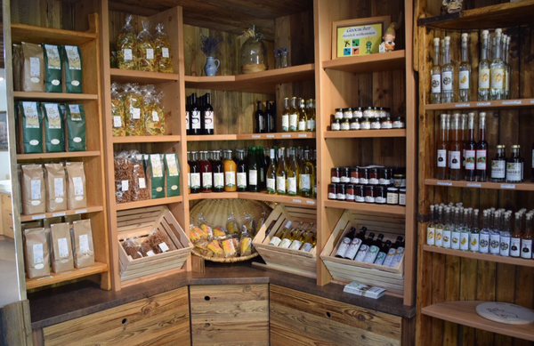
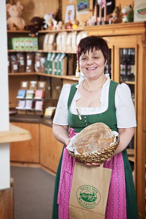

Hofladen "total regional"

Unsere hofeigenen Bio-Produkte gibt es im Hofladen "total regional" zum Mitnehmen.
Mehrmals im Jahr gibt es auf Vorbestellung Bio-Frischfleisch vom Weideschwein, Kalb und Jungrind.
Die wichtigsten Einkaufskriterien sind neben Bio saisonal, regional und beste Qualität.
Daher gibt es bei uns im Hofladen "total regional" auch erlesene Produkte heimischer Bauern.
Damit unterstützen wir die biologische Landwirtschaft.
Einkaufsmöglichkeit während unserer Öffnungszeiten, DO-SO ab 14.00 Uhr.
Jause für daheim
Als willkommene Abwechslung bieten wir euch jede Art von Jausenbuffets und unseren “Sautrog” als köstliche Mahlzeit für eure Feier zu Hause an.
Unsere sauguaten Bio Produkte schmecken alt und jung.
Mit einer Speck-Alm Jausenplatte punktest du bei deinen Gästen ganz bestimmt. :)
Vorbestellung unter 07266/6261
Speck-Alm Bio Produkte
Alle unsere Produkte stammen aus eigener biologischer Landwirtschaft und werden am Hof zu den leckeren Köstlichkeiten verarbeitet.
So können wir für beste Qualität garantieren.